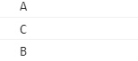

Animations
JavaScript is a single threaded programming language, which means that only one task can be performed at a time. Asynchronous behavior is not part of the language, it is available through browser APIs

Objects are allocated in a heap which is just a name to denote a large mostly unstructured region of memory
Stack
This represents the single thread provided for JavaScript code execution. Function calls form a stack of frames (more on this below)
Queue
A JavaScript runtime uses a message queue, which is a list of messages to be processed. Each message has an associated function which gets called in order to handle the message.
function main() {
console.log("A")
setTimeout(function exec() {
console.log("B")
}, 1000)
console.log("C")
}
main()

function main() {
console.log("A")
setTimeout(function exec() {
console.log("B")
}, 0)
console.log("C")
}
main()